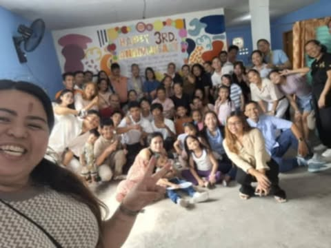 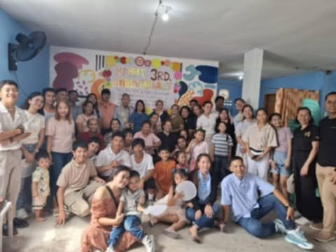
3RD YEAR ANNIVERSARY
3rd year anniversary, during the 3rd anniversary show that we are seeing more and more people attending church and we are also seeing our growth as leaders.
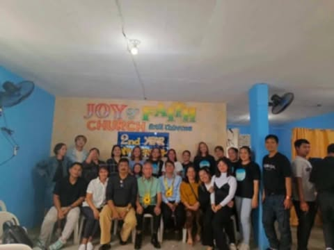 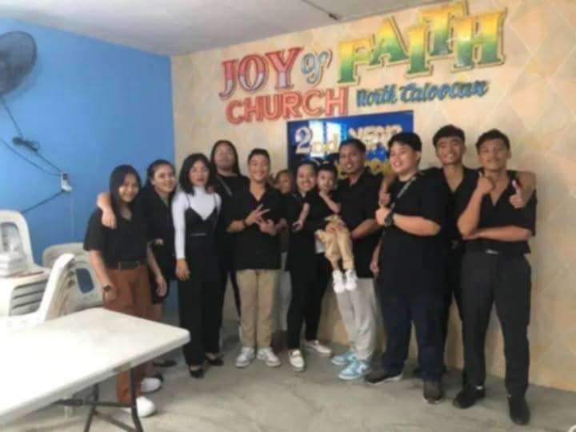
2ND YEAR ANNIVERSARY
The 2nd anniversary was a heartfelt because the church is growing in numbers together with faith.The elders and leaders are orderly prapered everything for the event.My heart is overwhelmed for what i witness. I just thanked the Lord for the family i have in joy of faith church .
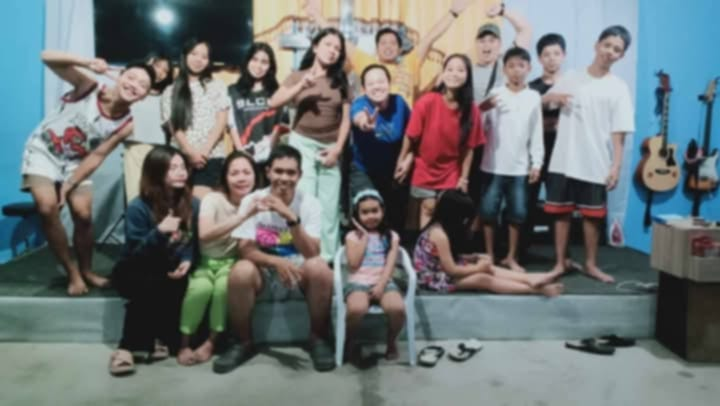 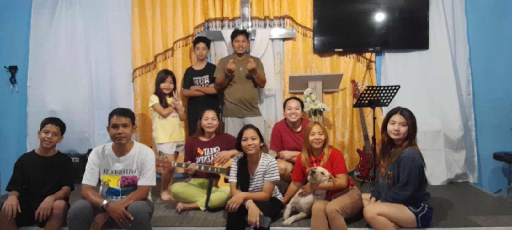
NIGHT PRAYER (Thursday 8-9pm)
We do this so we can further deepen our knowledge of the Word of God and strengthen our relationship with Him. And of course, as believers, we also need to stay passionate for the Lord. We must not grow cold in our faith so that we won't be deceived by the enemy. It's important that we also encourage and strengthen one another as brothers and sisters in Christ.
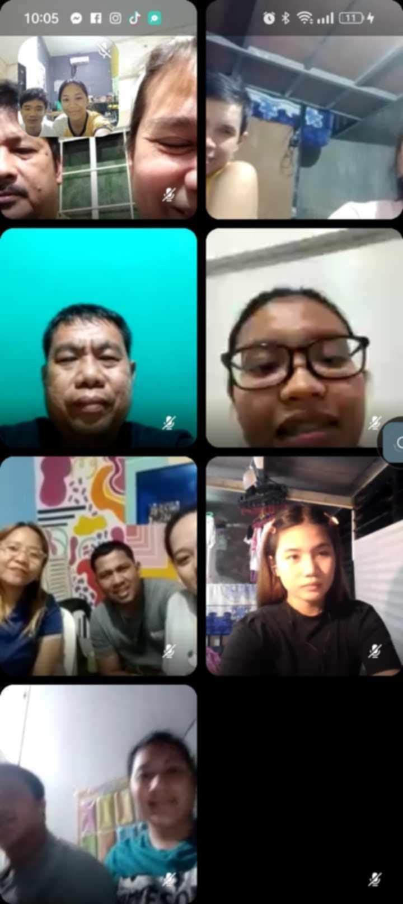 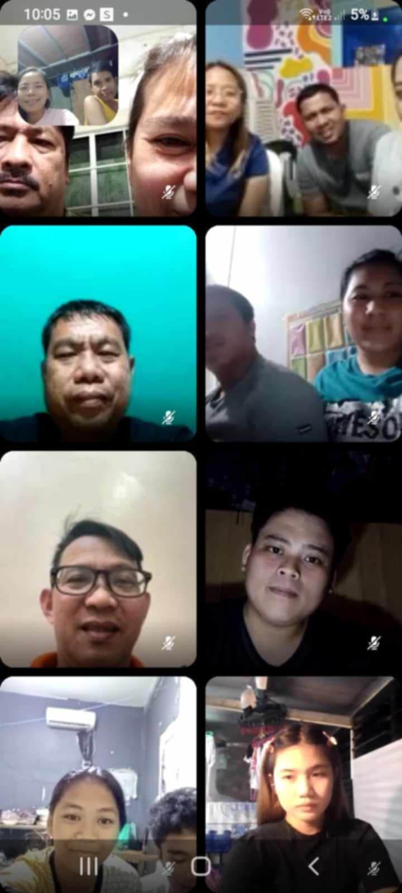
Online Mentoring ng mga Leaders (8-9pm) FRIDAY
This is training and preparation for the appointment of each leader in the work entrusted to us by God.
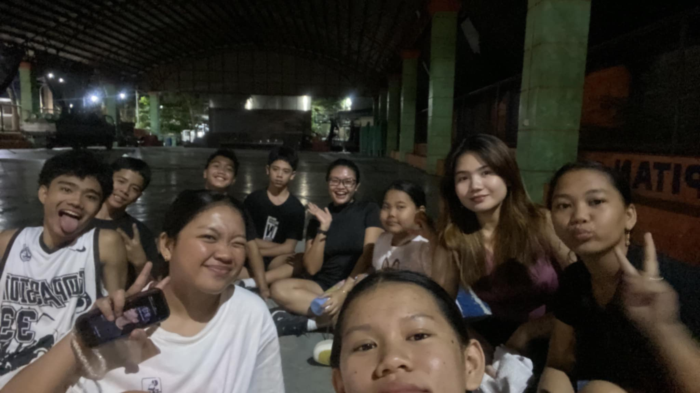 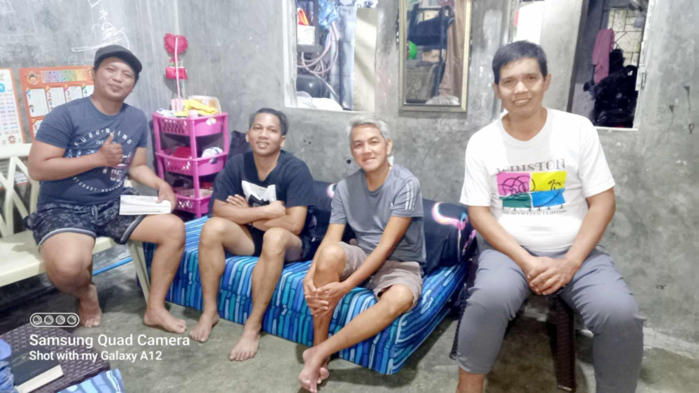
MENTORING
Mentoring ng mga kabataan kananayan katatayan, yung dito naman may mga kasama silang leaders at may kasama silang mga hindi pa leaders, at konting share-ran lang ng bible verse etc.
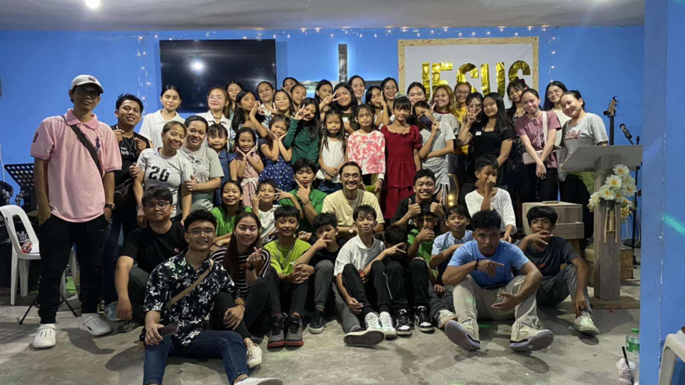 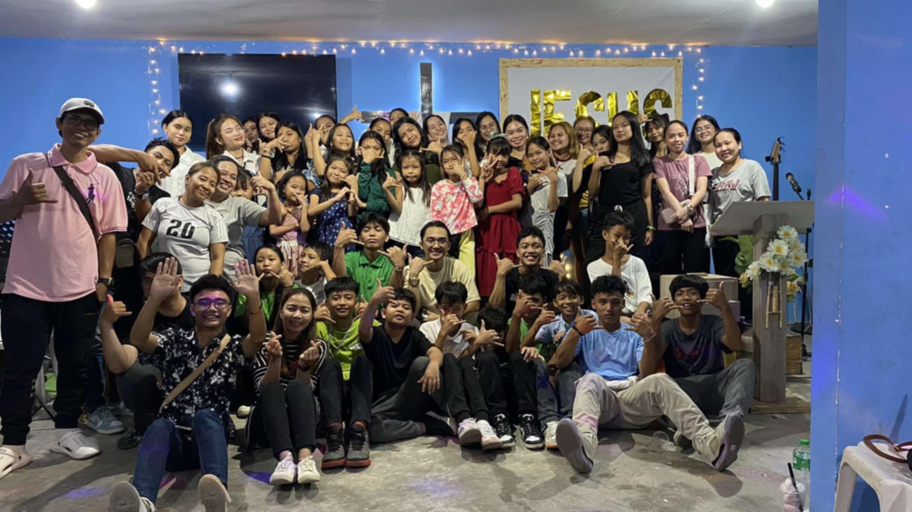
Youth service every month Sept 28
4PM - 6PM
youth service is a gathering dedicated to young people, designed to bring them together in worship, prayer, and studying God’s Word. The goal is to inspire the youth to grow deeper in their faith, develop their talents and abilities, and build a closer relationship with Christ.
Typically, the youth service includes vibrant praise and worship, meaningful messages tailored for young people, and activities that foster unity and fellowship. It’s also a space where testimonies can be shared, questions about faith can be asked, and support can be found among fellow youth and church leaders. The aim is to equip and empower the youth to become Christ-followers who care for their community and actively participate in God’s work.
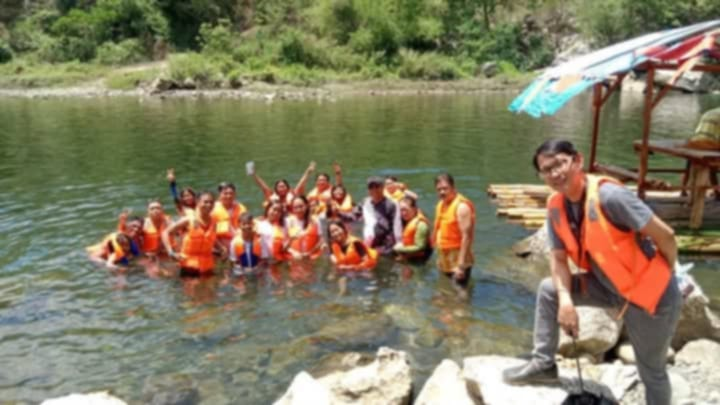
Baptism
The baptismal service in our church is an annual special event held to signify the believers' commitment to their faith in Christ. It is a meaningful ceremony symbolizing new life and cleansing from sin through obedience to God's command.
This takes place in a designated location, such as a river, sea, or baptismal pool, where each candidate is baptized in water as a public declaration of their personal acceptance of Jesus as Lord and Savior. The event includes worship songs, sharing of testimonies, and a short message from church leaders emphasizing the importance of baptism.
It is also an opportunity for the church to come together in celebration of each member's spiritual transformation and their journey of faith.
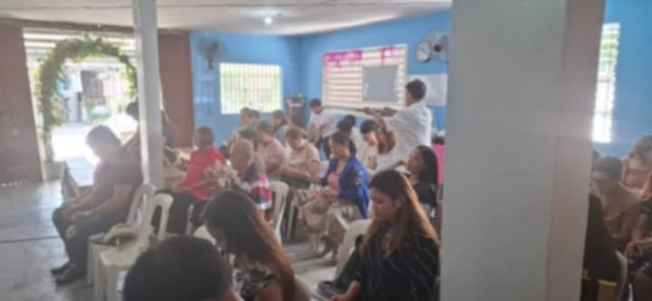
Sunday Service 9AM - 11AM
Our Sunday service is a weekly gathering to worship God, hear His Word, and grow in faith. It includes praise and worship, an inspiring sermon, and prayer. It’s a time to honor God, strengthen our faith, and connect with one another. The service also provides encouragement and guidance for daily life, helping us to stay rooted in our relationship with Christ. It is a sacred moment to seek His presence and be empowered for the week ahead.